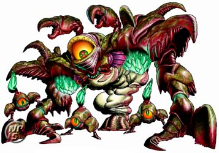
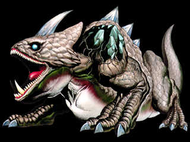
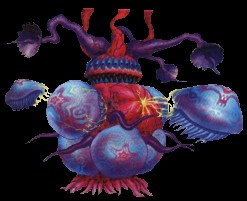
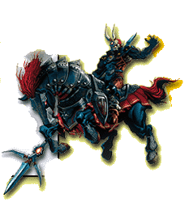
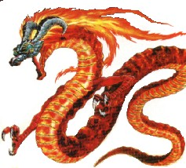
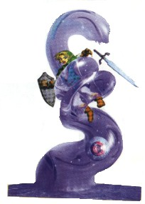
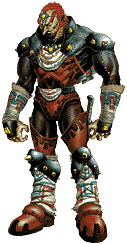

Welcome to the boss guide. This section will help in defeating the numerous bosses in Zelda 64. These are also found in the Walkthroughs of the appropriate levels. Hope I could help!

Parasitic Armored Arachnid: Queen Gohma-
Gohma is found in the Deku Tree and is the first boss in the game. When she comes down to
attack, thow a deku nut and stun her. then use your sword. When she goes up on the roof,
wait until her eye is red and fire a z-targeted deku seed in to it. She will be stunned and you
can slice. If she drops those annoying Gohma Larvae, just slice them with your sword twice.
If they turn red, jump out of the way cuz that's their attack warning. If you wait to long, they
will jump at you and it will hurt. After you hit them once they will run away and then come back.
Repeat until destroyed.

Infernal Dinosaur: King Dodongo-
King Dodongo was I think the easiest boss and is found in Dodongo's Cavern. When he does his roll
attack, duck under your Hylian sheild or stay on the inside of the ring right by the lava. When
he stops, go in front of him and he will start sucking in air for a fire attack. Its hard to hide
from this attack, and your sheild won't stop it. Before he exhales, throw a bomb into his mouth
and he will be stunned. Use your sword and he will die after 4 hits.

Bio-Electric Anemone: Barinade-
Barinade was somewhat a hard boss. First, remember that you can't stop moving at any time, or
you'll get zapped. Chuck your boomerang at the three cords clinging to the roof. When they break,
try to kill all the Bari (jellyfish dudes) and then use your boomerang to stun the body of
Barinade. Use your sword to kill. When the Bari are spinning, run to the wall and circle the
room and try to boomerang them down. The basic strategy to this boss is to keep moving and throw
your boomerang at anything that you can Z-Target. This boss has a cool ending.

Something Something Something: Phantom Ganon-
Phantom Ganon was fairly tough. On his horse, he'll ride into a picture on the wall and you'll
see him go up the little hill. Then he'll come back down, in two of the pictures, and only one
is real. It's the one that has better graphic detail and when it comes out, purple light
surrounds it. When he emerges, shoot an arrow or use your hookshot on him and he'll ride back
up the hill. After 3-5 shots, he'll lose the horse and float around above you in the room. Then
he'll shoot lightning bolts at you. Hit them with your sword and bounce them back. It's hard to
aim but you'll get the hang of it. Sometimes, he'll bounce them back again and you'll play
tennis with him for a bit. When he gets hit, he'll fall, stunned. Use your sword here. Repeat
until destroyed. You'll talk the real Ganondorf after.

Sub-terrainean Lava Dragon: Volvagia-
Volvagia takes a little patience. He performs a total of three different attacks. The first is
where he pops his head out of one of the holes and stares at you. Stick your hammer in his head
and he'll be stunned. Then use your sword. The second is when he flies in the air and blows
fire at you. If you go under him, he'll just fly in a circle doing nothing for a moment, then
return. Next he'll do the first attack, use the same tactics here. Finally, he'll fly in the
air way above you and knock rocks from the ceiling. When this happens, run in a circle around
the island and the rocks won't hit you. When he returns to the island, the rocks will follow
so stand clear until the next attack. He'll perform that series of attacks, in that order, over
and over until he's dead. You always know which hole he'll pop out of when the fire comes out
but the more you hit him, he will start faking entrances, meaning fire will come out of a hole,
then another, then another where he'll actually come out. Repeat until dead. Note: always hit
his head.

Giant Aquatic Amoeba: Morpha-
Morpha is easy. Z-Target the nucleus and run to a corner. Ready your longshot. the nucleus will
start spinning around and form a tentacle of water that will lash out at you. If you are far
enough in the corner, it won't be able to hit you. Run past it to the other corner and fire the
longshot at the nucleus. It will pullit towards you where you can hit it. Repeat. After a while,
two tentacles will form, but it really poses no challenge, just continue just the same. Make sure
not to hit the spikes around the end of the room. You can also go into the middle blocks, but
I havn't tried that, it might be easier, but I don't know how the hardest temple can have an
easier boss.
Phantom Shadow Beast from Beyond: Bongo Bongo-
Bongo Bongo is somewhat difficult until you get the hang of it. What you have to do make sure you
have your Hover Boots on, and your lens of truth ready. Z-Target his hands, one at a time, and freeze them with
arrows, when they are frozen, fire the lens up, and either ready your spin attack and let go when his eye is near,
then slice and dice, or you can fire an arrow into his eye, then Slice and Dice. About 3-5 times should do it.
Using the Biggoron's Sword will durastically shorten the time. Grap your heart container and begone from this sneaky
level.
Sorceress Sisters: Twinrova-
Twinrova has two forms that are fairly easy. The first has the two witches flying around and shooting at you.
When Ice comes, reflect it with your mirror sheild at the Fire witch, and vice versa. Three Hits or so changes
the form and they become one big witch. She will start firing Ice and Fire at you. REflect with your mirror sheild,
and it will absorb the blast. Now you need to collect three blasts of one type, fire or ice. DO NOT MIX THEM. You can
loose up to 10 hearts. When three are absorbed, it will all come out and you will need to aim it at her. She Will fall to
the ground and you can slice and dice. Repeat.

King of Thieves: Ganondorf-
Ganondorf has lots of stages to beat him. First, when he starts, run away to the wall. He Should smash the ground and
tiles will fall. Now go to a corner (that won't fall) and pull out your sword. He will blast you with a electricity
shot. Remember Phantom Ganon?? Hit it back to him with your sword. He will bounce it back a few times until you hit him.
Now quickly fire a light arrow at him. If you hit him, ready your longshot and fire at him when he falls. You will go over
and hit him with your sword. He will get up and you must longshot back to the wall or jump across. If the Light arrow misses,
ready your sword becuase you only get one shot. Repeat this. If you are using the Master Sword, you will probably
face the Black Hole attack. He like sucks all the light out of the room and all these balls of
electricity fly at you. When he starts to charge it up, charge up your spin attack. Before the balls hit
you, release and all the balls will hit him. Light arrow, longshot, sword. If you use the biggoron's sword,
you should kill him before he uses the Black Hole. He will fall to the ground, hork blood and die.
GANON-
Ganon is easy. Since he hits your master sword, you need the Biggy. Just run at him, roll under the legs, spin around, and hit his tail.
Simple. If you dont have Biggy, you can use bombs, megaton Hammer, etc. After awhile, he'll fall, you can get your Master sword, and
he'll get up in his second form. Same as the previous, just that he's now faster. Repeat and he'll fall, Zelda will tell you to
deliver the final blow, where you MUST use the Master Sword, and he'll perish. Done. Enjoy the Game ending! It sucks...